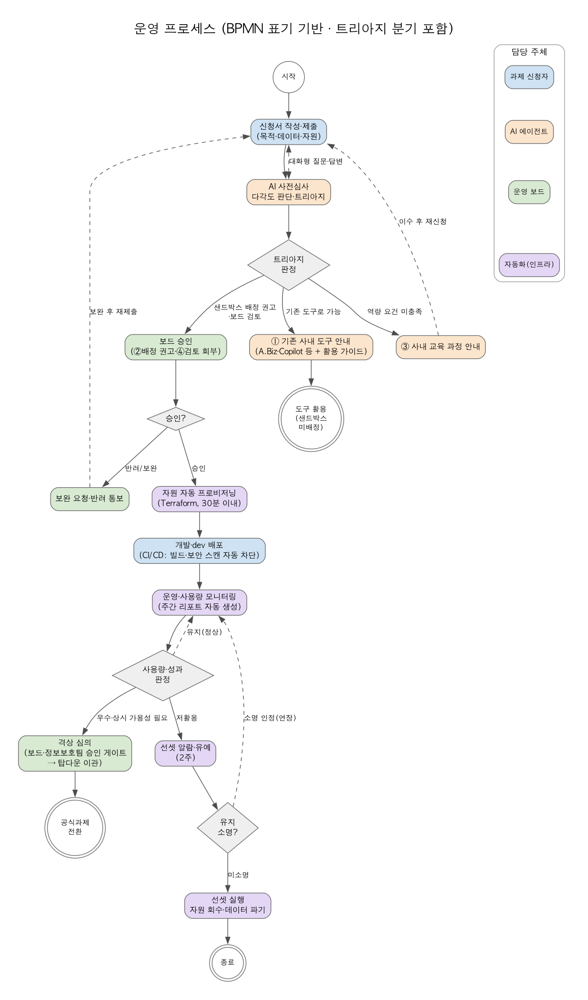
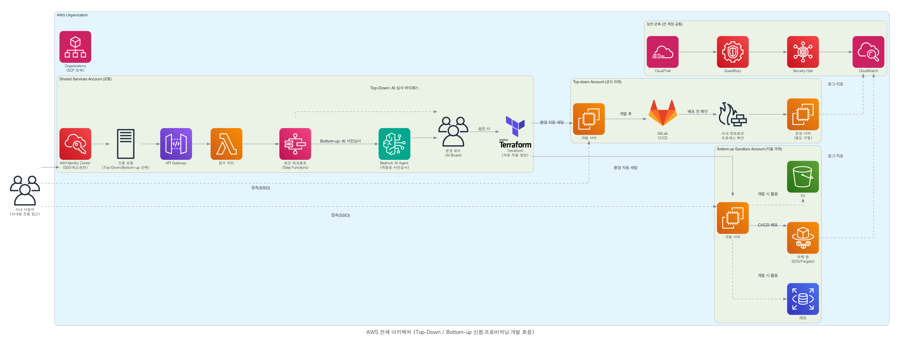

| 구분 | 바텀업 (본 기획) | 탑다운 (공식 과제) |
|---|---|---|
| 과제 성격 | 현장 자율 제안 (실험·검증) | 사업 계획으로 확정된 공식 과제 |
| 심사 | AI 다각도 심사·트리아지 후 보드 승인 | AI 심사 바이패스, 보드 확인 |
| 가동 | 시간제 가동 — 비용 구조적 통제 | 상시 가동 (SLO 관리) |
| 배포 | dev 배포까지 (승인 게이트 없음) | 스테이징 → 운영 + 승인 게이트 |
| 데이터 | 실데이터 허용 — 민감정보 마스킹 원칙 | 통제 하 실데이터 연동 허용 |
| 종료 | 저활용 자동 선셋 | 사업 판단에 따른 종료·이관 |


| 단계 | 기간 | 핵심 작업 |
|---|---|---|
| 1. 공통 기반 | M1~M2 | Landing Zone (탑다운과 공동 구축) |
| 2. 신청 자동화 | M2~M3 | 포털·워크플로·표준 모듈·가동 스케줄러 |
| 3. AI Agent·CI/CD | M3~M5 | 심사·트리아지 에이전트, 리포트, 파이프라인 |
| 4. 정착·고도화 | M5~M6 | 격상·선셋 자동화, 자동 승인 확대 |